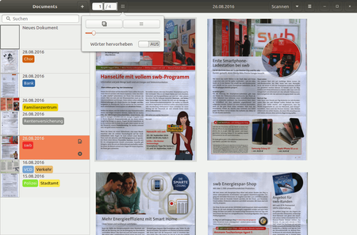
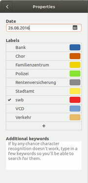
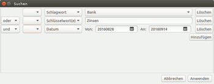

Paperwork
Dieser Artikel wurde für die folgenden Ubuntu-Versionen getestet:
Ubuntu 16.04 Xenial Xerus
Ubuntu 14.04 Trusty Tahr
Zum Verständnis dieses Artikels sind folgende Seiten hilfreich:
Paperwork  ist ein in Python verfasstes Programm zur Digitalisierung, Indexierung und Archivierung von Dokumenten aller Art. Die Vorlagen werden eingescannt (SANE-fähiger Scanner nötig) oder vorhandene Bilddateien importiert. Mittels tesseract-ocr werden sie mit einer durchsuchbaren Textebene versehen, die Seitenausrichtung wird dabei automatisch erkannt und die Seite ggf. aufrecht gedreht. Das Programm bietet ein automatisches Indexierungs- und Suchsystem, das alle erkannten Wörter beinhaltet, zusätzlich können die Dokumente mit weiteren "Labels" und Schlagwörtern versehen werden. Die Vorlagen werden als .jpeg-Dateien mit dazugehörigen hOCR-Dateien gespeichert. Das Motto des Programms lautet "Using scanners and OCR to grep paper documents the easy way " (in etwa: Scanner und Texterkennung verwenden, um Papierdokumente ganz einfach auszulesen). Schwerpunkt soll laut Entwickler die möglichst vollautomatische Verarbeitung sein ("scan and forget it"), daher sind für den Benutzer nur relativ wenig Auswahlmöglichkeiten vorgesehen. Das Programm befindet sich noch in einer frühen Entwicklungsphase, etliche Verbesserungen sind bereits für zukünftige Versionen vorgesehen. Ab Version 0.1.2 ist die Oberfläche fast vollständig ins Deutsche übersetzt.
ist ein in Python verfasstes Programm zur Digitalisierung, Indexierung und Archivierung von Dokumenten aller Art. Die Vorlagen werden eingescannt (SANE-fähiger Scanner nötig) oder vorhandene Bilddateien importiert. Mittels tesseract-ocr werden sie mit einer durchsuchbaren Textebene versehen, die Seitenausrichtung wird dabei automatisch erkannt und die Seite ggf. aufrecht gedreht. Das Programm bietet ein automatisches Indexierungs- und Suchsystem, das alle erkannten Wörter beinhaltet, zusätzlich können die Dokumente mit weiteren "Labels" und Schlagwörtern versehen werden. Die Vorlagen werden als .jpeg-Dateien mit dazugehörigen hOCR-Dateien gespeichert. Das Motto des Programms lautet "Using scanners and OCR to grep paper documents the easy way " (in etwa: Scanner und Texterkennung verwenden, um Papierdokumente ganz einfach auszulesen). Schwerpunkt soll laut Entwickler die möglichst vollautomatische Verarbeitung sein ("scan and forget it"), daher sind für den Benutzer nur relativ wenig Auswahlmöglichkeiten vorgesehen. Das Programm befindet sich noch in einer frühen Entwicklungsphase, etliche Verbesserungen sind bereits für zukünftige Versionen vorgesehen. Ab Version 0.1.2 ist die Oberfläche fast vollständig ins Deutsche übersetzt.
Installation¶
Das Programm ist nicht in den Paketquellen vorhanden. Daher kann man den Installationsanweisungen des Autors folgen, die momentan (August 2016) allerdings nicht ganz aktuell sind.
Abhängigkeiten¶
Benötigt werden zum Erstellen/Verwenden folgende Pakete[1]:
python-pip
python-setuptools
python-dev
python-pil
libenchant-dev
python-stdeb
gir1.2-poppler-0.18
tesseract-ocr (sowie gewünschte Sprachpakete, optional)
 mit apturl
mit apturl
Paketliste zum Kopieren:
sudo apt-get install python-pip python-setuptools python-dev python-pil libenchant-dev python-stdeb gir1.2-poppler-0.18 tesseract-ocr
sudo aptitude install python-pip python-setuptools python-dev python-pil libenchant-dev python-stdeb gir1.2-poppler-0.18 tesseract-ocr
Um die benötigten Python-Anwendungen nicht "an der Paketverwaltung vorbei" installieren zu müssen, empfiehlt es sich, mittels stdeb aus dem Python-Paketen jeweils einfache Debian-Pakete zu bauen, die automatisch aus dem Python Package Index (PyPI) geholt und mit den benötigten Abhängigkeiten erstellt und installiert werden. Damit ist auch die Garantie gegeben, dass die jeweils aktuellsten Versionen verwendet werden (Paperwork in Version 0.3.2, Stand August 2016). Dazu die folgenden Befehle in der angegebenen Reihenfolge im Terminal ausführen:
sudo pypi-install pyocr sudo pypi-install pyinsane sudo pypi-install simplebayes sudo pypi-install paperwork
Mit dem Befehl
paperwork-chkdeps
kann überprüft werden, ob alle benötigten Abhängigkeiten tatsächlich verfügbar sind; fehlende Pakete werden angezeigt (wenn sie denn in den Ubuntu-Quellen verfügbar sind; simplebayes ist z.B. nur über PyPI beziehbar).
Benutzung¶
 Nach dem Start[4] erscheint ein Fenster mit einer allgemeine Dokumentenseitenleiste ("Documents") mit den zuletzt erstellten Dokumenten und oberhalb einer Suchfunktion sowie einem großen Darstellungsfenster, ggf. mit der aktuell gewählten Seite des Dokuments, darüber etliche Schaltflächen.
Hinweis:
Auf das Einstellungsmenü kann unter Unity nur zugegriffen werden, wenn auf dem Rechner in den "Systemeinstellungen -> Darstellung -> Verhalten" bei "Zeige Menüs für ein Fenster -> In der Menüleiste" (oberes Panel) ausgewählt wird; in der Titelleiste des Fensters werden die Menüs momentan nicht angezeigt.
Konfiguration¶
Unter "Paperwork -> Einstellungen" werden das "Arbeitsverzeichnis", der gewünschte Scanner samt die Auflösung eingestellt, außerdem die gewünschte Sprache für die Texterkennung, abhängig von den für tesseract den installierten Sprachpaketen. Im Fenster rechts kann zudem der gewünschte Scanbereich festgelegt werden (dazu einen Scanvorgang starten,  -Klick auf die blauen Quadrate und dann ziehen). Die Einstellungen werden in der Datei ~/.config/paperwork.conf gespeichert.
-Klick auf die blauen Quadrate und dann ziehen). Die Einstellungen werden in der Datei ~/.config/paperwork.conf gespeichert.
Dokumente erfassen¶
Mit Paperwork können - ein SANE-fähiger Scanner vorausgesetzt - die Vorlagen direkt eingescannt werden ("Scannen"-Schaltfläche), es lassen dazu sich auch ADF-Scanner verwenden (Dropdown-Menü neben der Schaltfläche "Scannen-> Vom Dokumenteneinzug scannen". An bestehende Dateien lassen sich Scans anhängen, indem man in der Documents-Leiste das gewünschte Dokument auswählt und einen weiteren Scan-Vorgang startet. Auch bereits existierende Bilddateien lassen sich einbinden (Dropdown-Menü neben der Scannen-Schaltfläche -> "Datei(en) importieren", verwendbar sind die von python-imaging bzw. Pillow unterstützten Formate , Dateien können auch an gescannte Dokumente angehängt werden. Mehrseitige Dokumente werden zusammengefasst abgespeichert.
Paperwork versieht die Scans sofort mit einer durchsuchbaren Textlage, die Seitenausrichtung wird dabei automatisch erkannt. Details/"bounding boxes" der erkannten Wörter können über die Schaltfläche neben dem Seitenzähler - > "Wörter hervorheben" eingeblendet werden. Die Ergebnisse werden sofort indexiert (Datenbank in ~/.local/share/paperwork/index/). Falls nötig (falsche Sprache gewählt o.ä.) kann sowohl die Texterkennung (für die aktuelle Seite Schaltfläche mit dem symbolisierten Stapel ganz links außen, dort "OCR erneut durchführen", für alle Seiten unter "Paperwork -> Erweitert-> OCR für alle Dokumente wiederholen") als auch der Indexierungsvorgang wiederholt werden ("Paperwork-> Erweitert -> Alle Dokumente erneut indizieren"). Das Programm erkennt beim Start, ob es Veränderungen an den archivierten Dateien gegeben hat, und indexiert diese ggf. neu.
Die Dokumente werden standardmäßig im Homeverzeichnis des Benutzers unter ~/papers/JJJJMMTT_UHRZEIT_SEKUNDE/ mit den Werten des ersten Scans abgelegt, für jede Seite wird eine paper.X.jpeg-Datei, eine Vorschau (paper.X.thumb.jpeg), sowie eine paper.X.words-Datei mit der Texterkennung erstellt (es handelt sich dabei um hOCR-HTML-Dateien).
Scans bearbeiten¶
In eingeschränktem Rahmen lassen sich die Scans auch bearbeiten, dazu die "Bearbeiten"-Schaltfläche wählen, die im Scan oben links erscheint, wenn man den Mauszeiger im Fenster stehen hat. Dort kann die Vorlage beschnitten und gedreht werden, dann mit "Anwenden" die Änderungen übernehmen. Weitergehende Bearbeitungen (Schärfen, Kontraste verändert etc.) sind nicht vorgesehen. Unbenötigte Scans lassen sich im Darstellungsfenster über die Schaltfläche mit dem "x" auch wieder entfernen.
Dokumentenansicht verändern¶
Über den Schaltfläche neben dem Seitenzähler kann festgelegt werden, ob das Dokument seitenweise oder gesamt dargestellt werden soll, mit dem Schieberegler kann die Ansicht ein- oder ausgezoomt werden.
Labels und zusätzliche Schlagwörter erstellen¶
 Über das Werkzeug-Symbol, das zu der gerade ausgewählten Datei in der rechten Seitenleiste angezeigt wird, lässt sich das "Properties"-Menü öffnen. Im oberen Feld kann das Datum, nachdem die Dokumente sortiert werden, verändert werden (z.B. Datum eines Schreibens statt des Erstelldatums). Darunter lassen sich übergeordnete Label vergeben, die zudem noch mit farbigen Markierungen geordnet werden können. So kann man z.B. thematisch verwandte Kategorien mit ähnlichen Farben versehen. Die zugeordneten Labels erscheinen in der Dokumentenleiste jeweils neben dem Vorschaubild der Dateien. Paperwork versucht, anhand der indizierten Wörter aus den bereits bestehenden Labels passende zuzuordnen, das funktioniert halbwegs verlässlich allerdings erst bei einer größeren Anzahl vom eingespeicherten Dokumenten.
Hinweis:
Leider verschwinden erstellte Labels wieder, wenn sie nicht mindestens einem Dokument zugeordnet sind; man kann sie also nicht "auf Vorrat" erstellen, sondern muss sie sofort verwenden. Hintergrund ist die derzeitige Speichermethode für diese Labels; sie werden nicht zentral, sondern in der Datei labels im entsprechenden Dokumentverzeichnis gespeichert.
Außerdem können (z.B. wenn die Texterkennung bei handschriftlichen oder kontrastarmen Vorlagen versagt) zusätzliche Schlagwörter, "additional keywords" (thematische, Beurteilungen etc., die nicht im Dokument auftauchen) aufgenommen werden, unter denen das Dokument gefunden werden soll. Diese Angaben werden im Dokument-Verzeichnis als extra.txt abgelegt.

Dokumente durchsuchen¶
Alle Dokumente können dann über die Suchfunktion in der "Documents"-Leiste durchforstet werden. Nach Eingabe einiger Zeichen erscheint unterhalb des Fensters ein Dropdown-Menü mit ähnlich geschriebene Vorschlägen.
In der erweiterten Suchfunktion (Symbol neben dem Sucheingabefeld) lässt sich zusätzlich festlegen, dass nur Dateien mit bestimmten Schlagwörtern ("Label") oder Schlüsselwörter (aus dem Index sowie den zusätzliche erstellten) verwenden werden sollen, es sind "oder"-Verknüpfungen, Ausschlüsse von Schlagwörtern, oder die Suche nach einem bestimmtem Datum.
Hinweis:
Der Umgang mit Umlauten ist etwas gewöhnungsbedürftig. Die Indexier- und Suchfunktion entfernt alle diakritischen Zeichen (Akzente, Umlautpunkte etc.), weil die OCR-Programme zum Teil Schwierigkeiten haben, diese verlässlich zu erkennen. Man kann in der Suche Wörter mit Umlauten verwenden, als Vorschläge aus dem Index erscheinen aber nur die "gestrippten" Versionen. In den Texterkennungsdateien selbst (paper.X.words) werden die Umlaute richtig dargestellt. Das führt dazu, dass für eine Suche mit Umlaut (z.B. "Häute") auch Dokumente auftauchen, die die Version ohne Umlaut beinhalten, und umgekehrt natürlich auch. Groß- oder Kleinschreibung spielt für die Suche kein Rolle, die Suchen nach "haute" und "Häute" liefern also identische Ergebnisse; das "ß" wird hingegen anstandslos akzeptiert.
Drucken und Export¶
Dokumente können über die Stapel-Schaltfläche -> "Drucken" direkt ausgedruckt werden. Die einzelnen Seiten lassen sich als .jpeg oder .png-Dateien exportieren (via Stapel-Schaltfläche -> "Exportieren"), das Gesamtdokument auch kann als PDF ausgegeben werden. Die Texterkennung geht dabei aber leider verloren (siehe aber auch Probleme und Lösungen).
Probleme und Lösungen¶
Neuerstellen des Indexes¶
Wenn es bei der Erstellung des Index (insbesondere nach Wechsel auf eine aktuellere Version) oder anderweitig Probleme gibt, kann ein Neuerstellen hilfreich sein. Dazu Paperwork erst beenden, und dann das Index-Verzeichnis entsorgen, ganz radikal geht das im Terminal[5] mit
rm -rf ~/.local/share/paperwork
Wer etwas vorsichtiger ist, benennt das Verzeichnis erst einmal um. Paperwork erstellt dann beim Neustart einen neuen Index (das geht recht schnell).
Dokument oder Teile werden von großer Bounding-Box verdeckt¶
Leider kommt es vor, dass Paperwork sehr große Bounding-Boxes erstellt, die die gesamte oder zumindest große Teile der Seite überdecken, und so die darunter liegenden Inhalte unsichtbar macht. Ggf. kann man durch einen Neuzuschnitt (Kanten etwas nach innen ziehen) die große Bounding Box eliminieren.
Vorschaubilder werden nach Neustart nicht angezeigt¶
In Version 0.3.2 werden die Vorschau-Bilder nach einem Neustart nicht geladen, sodass in der Seitenleiste nur weiße Flächen angezeigt werden. Eine Lösung ist derzeit (Ende August 2016) nicht bekannt.
Scanner-Einstellung¶
Leider sind nur sehr wenige Scanner-Einstellungen möglich, es wird immer farbig kopiert, und bisher ist keine Anpassung von Kontrast, Helligkeit etc. vorgesehen. Bei schwierigen Vorlagen muss man ggf. die die Scans mit einem leistungsfähigerem Scanprogramm erstellen, importieren und erst dann weiterverarbeiten. Im unstable-Zweig der Entwicklerversion gab es einige Ansätze, der Entwickler hält das aber nicht für wirklich relevant.
Texterkennung erst nach dem Erfassen durchführen¶
Die Bearbeitung der Dokumente dauert auch auf leistungsstarken Rechnern ggf. recht lange, da für das Erkennen der Textrichtung jede einzelne Seite immer viermal einem OCR-Prozess unterworfen, und dann anhand der Resultate überprüft wird, welche Ausrichtung vorliegt. Diese Prozedur lässt sich umgehen, indem man bei der Sprachauswahl zunächst "Deaktiviere OCR" auswählt, und darauf achtet, dass die Scans in der richtigen Richtung erfolgen. Dann kann man nach dem Einscannen der Vorlage die OCR-Funktion wieder aktivieren, und dann in "Dokument -> Erweitert" die Auswahl "OCR für das Dokument wiederholen" wählen, sodass die Erkennung erst ganz am Ende erfolgt.
Korrekturen an der Texterkennung¶
Eine interne Korrektur der OCR-Ergebnisse ist nicht vorgesehen. Eine - wenn auch beschwerliche - Möglichkeit besteht aber darin, die paper.X.words-Dateien in einem Editor[6] zu bearbeiten; allerdings lassen sich die eigentlichen Textstrings nur mühsam finden. Die automatische Re-Indexierung funktioniert hingegen tadellos, die korrigierten Wörter werden nach kürzester Zeit gefunden. Ggf kann mit "Paperwork -> Einstellungen -> Index optimieren" nachgeholfen werden.
PDFs mit Textlage erstellen¶
Aus den erstellten Dateien im Arbeitsverzeichnis der jeweiligen Dokumente lassen mit hocr2pdf (Teil von ExactImage) durchsuchbare PDFs erstellen, mit folgendem Terminal-Befehl im entsprechenden Verzeichnis:
hocr2pdf -i paper.X.jpg -o AUSGABENAME.pdf < paper.X.words
Mehrseitige PDFs sind so allerdings nicht direkt erstellbar, die einzelne PDFs müssten dazu aneinandergehängt werden (dazu sind etliche Programme vorhanden, siehe PDF-Dateien bearbeiten; oder auch bei den nachfolgenden Alternativen). Die Export-Funktion mit Textebene sollte in einer der nächsten Paperwork-Versionen implementiert werden, lässt leider aber noch auf sich warten.
Alternativen¶
Eine direkte Alternative mit Index-Funktion ist in den Quellen nicht vorhanden. Einige Programme können aber aus Bildvorlagen Dokumente mit durchsuchbarer Textlage erstellen, z.B. gscan2pdf oder xsane2djvu. OCRfeeder verfolgt einen etwas anderen Ansatz: es versucht, aus den Vorlagen .odt-Dokumente zu erstellen. Eine Indexierung für die Suche muss aber über andere Programme erfolgen, z.B. Tracker und Catfish. Außerdem existiert mit Archivista  eine große kommerzielle Lösung für das "papierlose Büro".
eine große kommerzielle Lösung für das "papierlose Büro".
- Erstellt mit Inyoka
-
 2004 – 2017 ubuntuusers.de • Einige Rechte vorbehalten
2004 – 2017 ubuntuusers.de • Einige Rechte vorbehalten
Lizenz • Kontakt • Datenschutz • Impressum • Serverstatus -
Serverhousing gespendet von